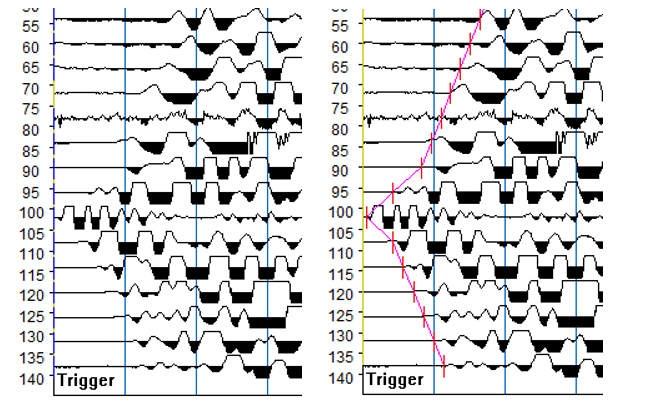
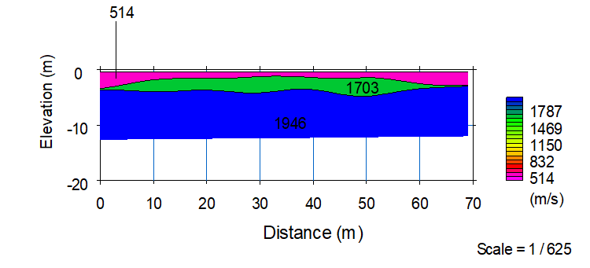

Insitu Test¶
SPT¶
E = 1 to 1.5 N for residual soil
su ~= 5N
Stroud (1974, 1989) recommended that E be estimated as
Su = (4.5 - 5.5) N
Eu = 50 to 1,500 Cu ; use 200 for typical soil
Consistency of Fine Grained Soils¶
| Consistency | Field guide to consistency | Indicative undrained shear strength (kPa) |
|---|---|---|
| Very Soft (VS) | Exudes between the fingers when squeezed in hand | Cu < 12 |
| Soft (S) | Can be moulded by light finger pressure | 12 < Cu < 25 |
| Firm (F) | Can be moulded by strong finger pressure | 25 < Cu < 50 |
| Stiff (St) | Cannot be moulded by fingers | 50 < Cu < 100 |
| Very Stiff (VSt) | Can be indented by thumb nail | 50 < Cu < 100 |
| Hard (H) | Can be indented with difficulty by thumb nail | Cu > 200 |
| Friable (Fr) | Can be easily crumbled or broken into small pieces by hand | - |
Consistency of Coarse Grained Soils¶
| Consistency | Field guide to consistency | Indicative undrained shear strength (kPa) |
|---|---|---|
| Very Soft (VS) | Exudes between the fingers when squeezed in hand | Cu < 12 |
| Soft (S) | Can be moulded by light finger pressure | 12 < Cu < 25 |
| Firm (F) | Can be moulded by strong finger pressure | 25 < Cu < 50 |
| Stiff (St) | Cannot be moulded by fingers | 50 < Cu < 100 |
| Very Stiff (VSt) | Can be indented by thumb nail | 100 < Cu < 200 |
| Hard (H) | Can be indented with difficulty by thumb nail | Cu > 200 |
| Friable (Fr) | Can be easily crumbled or broken into small pieces by hand | - |
Shear Vane¶
Probedrill uses the GeoMil FFL 100 Vane Shear which comes with three rectangular vane types. These are:
- 70mm * 35mm;
- 100mm * 50mm; and
- 150mm * 75mm vanes.
The test starts by pushing the vane and the rod vertically into the soft soil. The vane is then rotated at a speed which can be adjusted from 0.1° per second up to 15 ^{\circ} per second, while the sampling rate can be user defined.
Upon completion of the undrained shear test, the user can easily start a remould test. The vane will be turned 5 revolutions at a speed of 15 ^{\circ} per second. To prevent damage the maximum torsion during remould is limited to 50%. After the 5 revolutions the system returns to the preset turning speed and will log the residual shear strength.
CPT¶
Seismic Refraction¶
The Seismic Refraction method is a type of geophysical soil exploration methods is based on the principle that elastic shock waves travel at different velocities in different materials. It does this by measuring the travel times of P-waves which are created by striking the ground with a large hammer. The P-waves travel through the subgrade and refract back to surface geophones when they encounter a material with a greater seismic velocity. A Geode multi-channel data logger is employed to collect the vibration traces from 24 equally spaced geophones, and this time-distance information is uploaded to a computer. The depth of detection is limited by the length of the traverse and the energy of the wave source (or shot). In this case, using a sledge hammer as the energy source and a traverse length of 69 m, a depth of up to 25 m can be investigated. A higher energy source (such as a truck mounted hammer or explosives) and longer traverse length would be required to investigate to greater depth..

Table: Survey setup
| Geophone spacing | 3 m | 4 m | 5 m | 6 m |
|---|---|---|---|---|
| Survey length | 69 m | 92 m | 115 m | 138 m |
| Depth of interest | 15 – 18 m | 20 m | 25 – 30 m | 30 – 35 m |
| Equipment setup point | 34.5 m | 46 m | 58.5 m | 69 m |
The shear wave velocity is calculated from the P-wave velocity and subsequently the shear moduli of subsurface materials are calculated from the shear wave velocity. Interpretation of the survey traverses is presented in Figure

